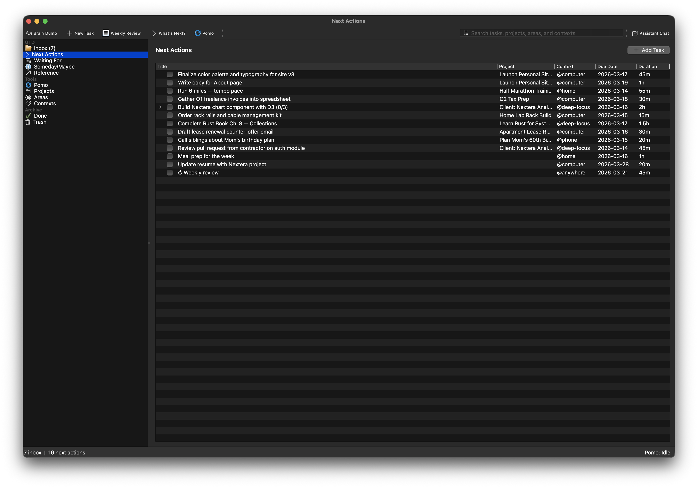
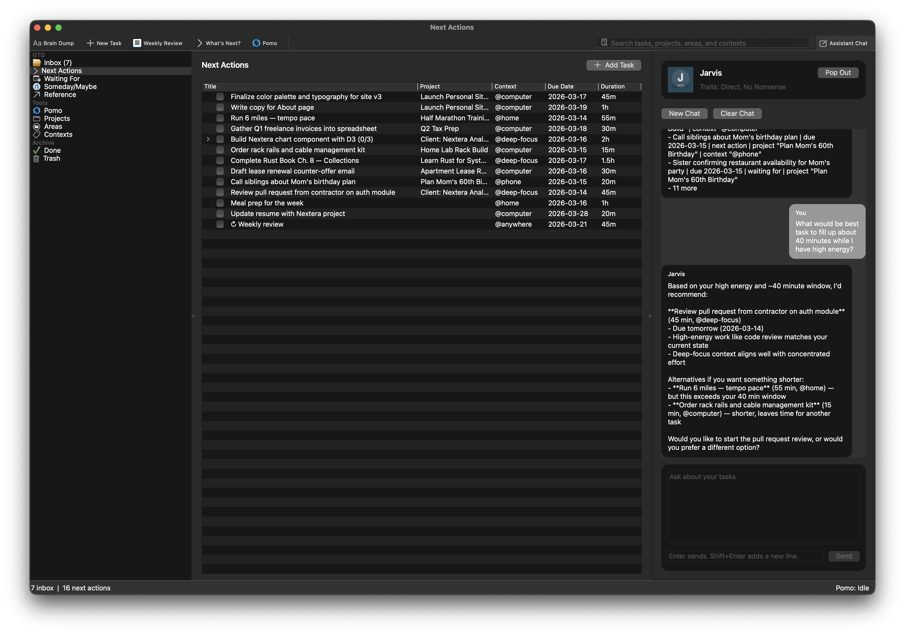
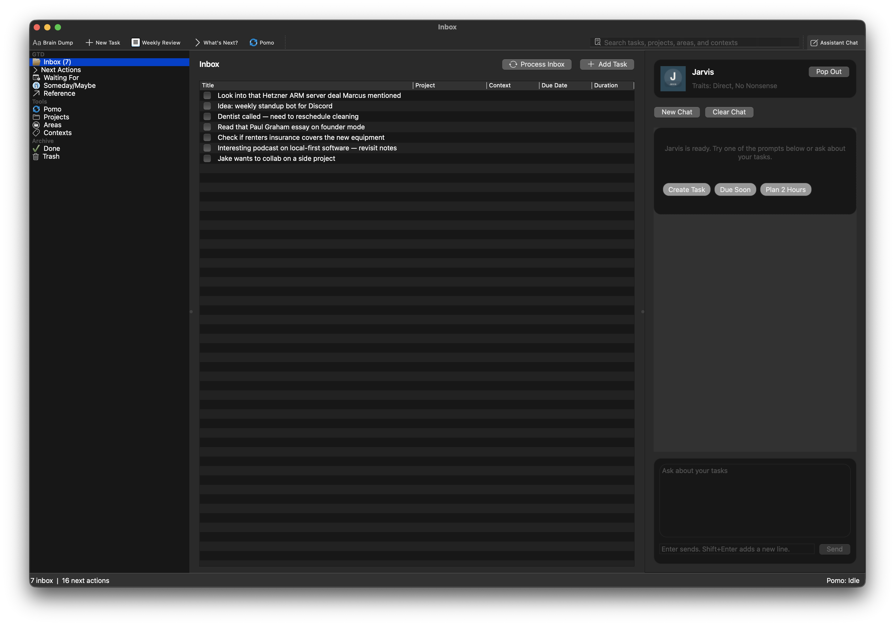
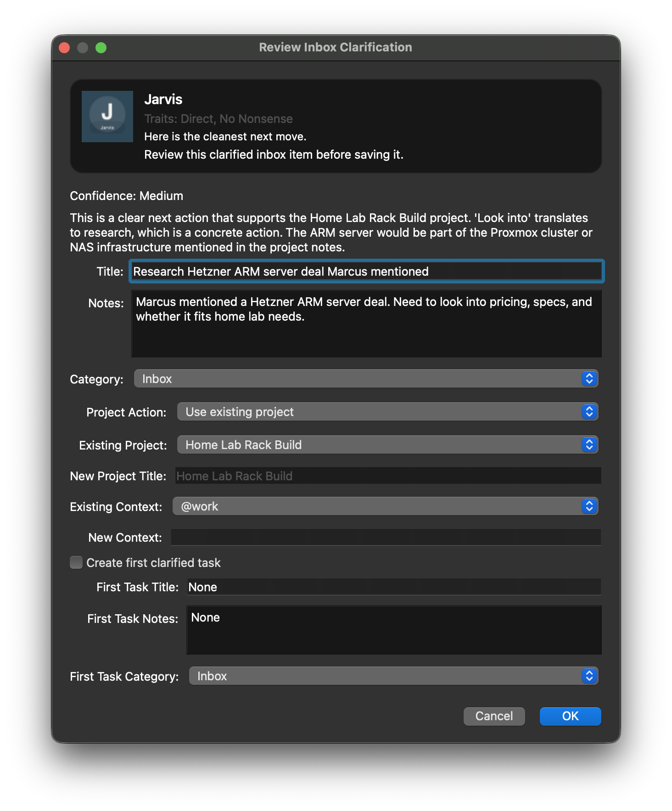
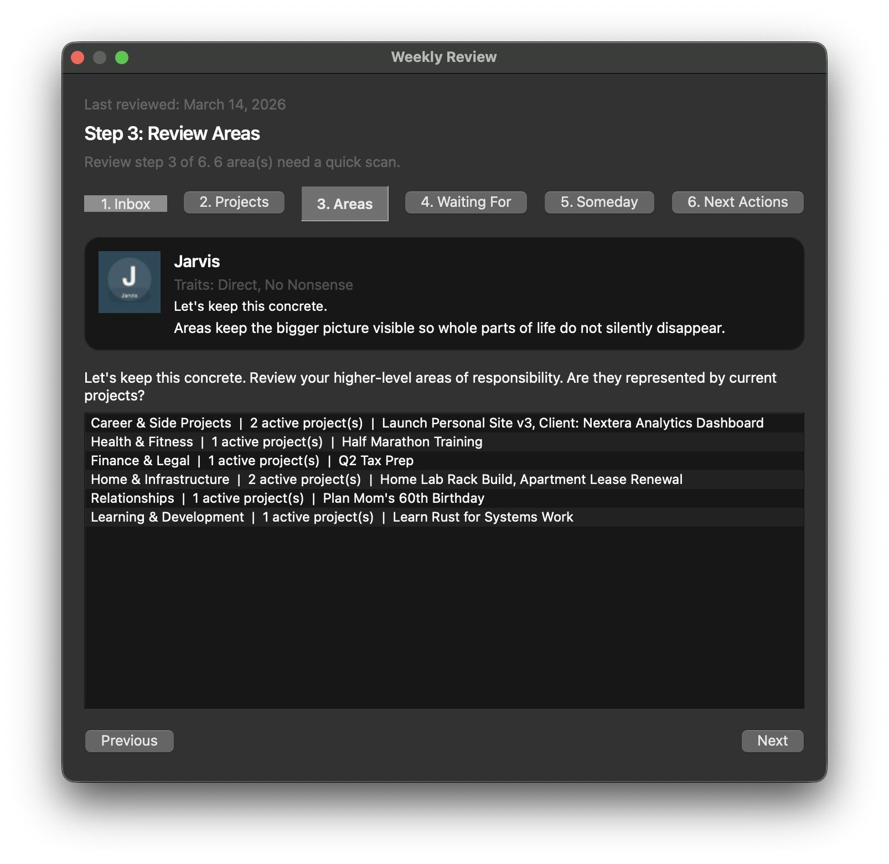
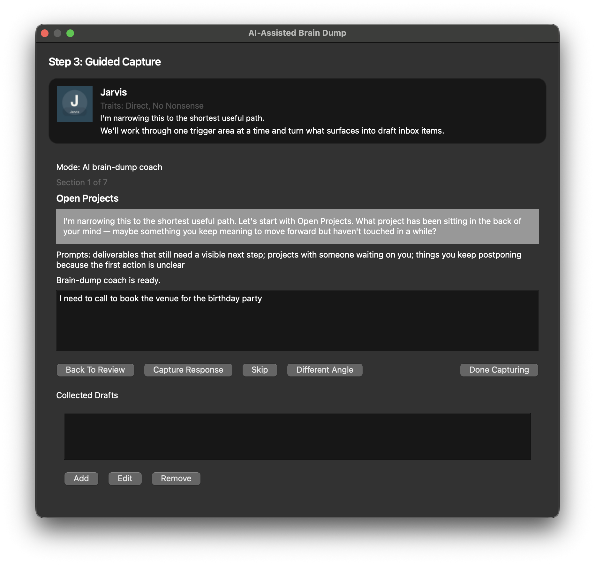

Every broken commitment is an open loop burning background cycles in your brain. Every “I’ll get to it later” is a memory leak draining your throughput. Cloud-dependent, subscription-hungry to-do apps won’t fix this — they’re the digital equivalent of shuffling papers. You need a real system. A natively compiled, local-first command center that implements the complete Getting Things Done methodology on bare metal.
No account. No subscription. No telemetry. Just your Mac and your mind.






Core Protocol
Most apps give you a checkbox and call it GTD. TaskBlaster Pro implements the complete five-stage processing pipeline with purpose-built interfaces for each stage. Zero open loops. Maximum throughput.
Dump the contents of your wetware into the Inbox buffer. The AI-coached Brain Dump module probes your commitments and surfaces open loops you didn’t even know you had. Ctrl+Option+Space captures from any app, system-wide — zero context-switch penalty.
Feed each item through the Task Synthesis System. AI instantly classifies category, project, context, and subtask decomposition. What used to take judgment calls now takes a single click.
Seven GTD categories, projects with stall detection, areas of responsibility, and contexts route every item to its correct memory address. Defer dates hide items until D-Day. The tickler system does the remembering for you.
Execute the six-stage Weekly Review subroutine. Defragment your system. Prune dead references. Flag stale projects. The habit that keeps your trusted system trustworthy.
Work from a clean system. The Cognitive Routing Engine recommends exactly what to execute right now. Complete a task and the system instantly queues up the next optimal action — zero downtime between executions.
Daily Operations Center
One screen. Every obligation that demands your attention today. No digging through categories. No manual filtering. The system computes your daily operations manifest automatically.
Overdue items flagged in red alert. Due-today tasks queued for execution. Deferred items that just came off the tickler, surfacing exactly when you need them. Your entire daily workload, synthesized into a single unified view.
Complete a task and a floating command prompt instantly surfaces the next action in the same project — or your top-priority next action if the project queue is empty. Zero cognitive switching cost. Zero momentum loss.
Delegated items are color-coded by urgency. Red = overdue follow-up. Accent = due today. Green = on schedule. You’ll never let a delegated ball drop again.
Defer tasks into the future with surgical precision. Items vanish from your active lists until the exact date they become actionable, then auto-surface on D-Day. Out of sight, on schedule.
⚠️ WARNING: EXTREME PRODUCTIVITY INSIDE ⚠️
System Specifications
Seven task categories, projects with stall detection, areas of responsibility, contexts, subtasks, recurrence, defer dates, and more. This isn’t a to-do list. It’s a command center.
Universal capture buffer with zero packet loss. Process items one-by-one — or engage the Task Synthesis System to instantly classify category, project, context, and subtasks. Inbox zero in minutes, not hours.
Priority-sorted execution pipeline with drag-and-drop reordering. Deferred tasks stay in standby until their tickler date triggers. Overdue items flagged in red alert. Context-filtered for situational awareness.
Multi-step outcomes with status tracking and AI-powered next-step suggestions. “No next action” stall warnings prevent silent project death. Area scans reveal life-balance allocation gaps before they become crises.
Lock into the zone. Configurable work/break cycles with visual countdowns, per-task analytic telemetry, and automatic session progression. Your Dock icon renders a live progress ring. The menu bar counts down in real-time. Your CPU never overheats.
Daily, weekly, monthly, yearly. Completing a recurring task auto-spawns the next instance with the correct due date. Set it and forget it — the system handles the rest.
Completion trends, streaks, per-project breakdowns, focus-time analytics, and Pomo session history. Real-time instrumentation of your personal throughput. Are you operating at peak capacity?
Search across all tasks with multi-axis filters: category, project, context, and due date range. Results stream in as you type. Sub-second retrieval guaranteed.
Select multiple tasks and execute category, project, context, or date mutations in one atomic operation. AI-powered batch suggestions for context and duration. Multi-level undo/redo prevents catastrophic data loss.
One-click database snapshots with integrity verification. Automatic safety backup before every restore. CSV import/export for interoperability. Your data. Your disk. Your rules.
Break complex tasks into nested subtasks without the overhead of a full project. Check off subtasks independently. The AI can auto-decompose on demand — or do it manually. Granular without the bureaucracy.
Feed meeting transcripts, project briefs, or brainstorm dumps into the TSS. It extracts a fully structured project with actionable tasks in seconds. Thirty minutes of processing, synthesized in one click.
Interoperability guaranteed. Export your entire system to CSV for external analysis, import tasks from any source, auto-create missing projects and contexts on ingest. Your data speaks every format.
Focus Overdrive Engine
Standard pomodoro timers count down 25 minutes and call it productivity. Focus Overdrive is a deterministic state-machine engine with phase transition gates, per-phase prep checklists, wall cues, and note capture built into every cycle. Choose from 11 bundled routines purpose-built for specific work modes — or program your own.
Learning Protocols
20-minute focused watch blocks with forced synthesis breaks. Rewind-on-drift discipline built in. 45-minute wall cue to stand, stretch, and switch to speakers.
Listen at target speed while keeping hands and body active. Mandatory takeaway capture every cycle — if you can’t summarize it, you didn’t absorb it.
Spoken Content pacing with eye-tracking. 15-minute blocks, forced summarization gates. Prevents the scroll-without-reading trap.
Analog focus with a visual pacer, pen-in-hand annotation, and timer-enforced synthesis breaks. 45-minute wall cue to explain concepts out loud while moving.
Creation Protocols
Fast draft phase (standing, dictating) followed by a seated edit pass. Get the ideas out first. Polish second. The system enforces the sequence.
Architecture and logic flow before touching code. Map the component shape, schema, or algorithm. Force yourself to design-review before you type a single line.
25-minute heads-down implementation. Park side ideas and tangents — the routine won’t let you chase them. Ship the planned slice. Nothing else.
Outline and narrative first — no design allowed. Visual polish only after the message is locked. Prevents the “spent 3 hours picking fonts” failure mode.
Operations Protocols
20-minute triage sprint. Sub-two-minute tasks: do now. Everything else: queue and move on. Batch-process the inbox of your life.
5-minute ignition protocol. Commit to the smallest possible next action with zero pressure to continue. Break the inertia. The rest follows.
Step away from the screen. Explain the bug path out loud. Write one specific next-step breadcrumb that makes restart easy. Break the loop.
~/.taskblaster/routines.json. JSON in, state machine out. Merged by ID with bundled routines.Focus Overdrive alone is worth the deploy.
Deploy to Your Mac — FreeOperational Modes
These aren’t features bolted on as afterthoughts. They’re dedicated execution pipelines with purpose-built interfaces and keyboard macros for zero-latency activation.
Initiate rapid-fire capture or engage the AI-coached guided mode that intelligently probes your projects, areas, and commitments to surface forgotten data. Like jacking a personal executive coach directly into your temporal lobe.
Execute your Weekly Review with unprecedented speed. Navigate all six stages — from Inbox Zero to Someday/Maybe pruning — using dedicated keyboard macros. Option+1 through Option+6 for zero-latency stage jumping. Hands on the keyboard. Mind in the matrix.
The Cognitive Routing Engine analyzes your entire system — deadlines, contexts, energy level, available bandwidth — and recommends the single optimal task to execute right now, with clear reasoning. Decision fatigue: terminated.
Over time, every system accumulates cruft. The Cleanup Wizard runs a four-stage diagnostic: merge duplicate contexts, normalize naming conventions, remove unused contexts, and archive stale projects. Plus orphaned task detection and near-duplicate flagging. Works offline with local heuristics. AI enhances when configured. Your system, factory-fresh.
Integrated Cyber-Semantic Expert System
Equipped with an Integrated Cyber-Semantic Expert System, TaskBlaster Pro leverages state-of-the-art artificial intelligence to eradicate decision fatigue. Feed your chaotic thoughts into the Capture module and watch as the TSS instantly categorizes, delegates, and structures your projects in real-time. No more open loops. No more processing bottlenecks. Just raw, unadulterated output.
The built-in assistant panel has full read access to your system state — tasks, projects, areas, contexts, deadlines — and uses that context to deliver recommendations no generic chatbot could compute. Ask it to decompose an overwhelming project into concrete next actions, identify neglected commitments, or run a decision tree with you in real-time.
Drop in meeting transcripts, briefs, or any unstructured document and the TSS instantly extracts a fully structured project with actionable tasks — work that used to take 30 minutes synthesized in seconds.
No vendor lock-in. No monthly AI fee. Bring your own API key from Claude, any OpenAI-compatible endpoint, or NanoGPT. Credentials stored in your OS keychain via hardware-backed encryption. The AI is your co-processor, not your landlord.
Hardware-Level Integration
TaskBlaster Pro doesn’t run in Electron. It doesn’t wrap a website in a frame. It’s natively compiled in Swift and deeply integrated with macOS, exploiting APIs that web apps can’t even see. The result: an app that feels like it shipped with your Mac.
Ctrl+Option+Space captures from ANY app without switching windows. The input field materializes system-wide. Type, hit Enter, keep working. Zero context-switch penalty.
All 30 app icons render as native SF Symbols via SwiftUI. They scale with accessibility settings, adapt to your system theme, and match every other native app on your Mac. No bitmap icons. No fuzzy scaling.
NSVisualEffectView with .sidebar material. The sidebar blurs your desktop wallpaper through it, exactly like Finder and Mail. Because native apps have texture.
Trackpad haptics fire on every task mutation: complete, move, create, edit, undo, redo. Your fingers feel the state change before your eyes see it.
Inbox count badge shows unprocessed items in real-time. During active Pomo or Focus Overdrive sessions, the Dock icon renders a live circular progress ring in your system accent color.
Native NSStatusItem with a live countdown during Pomo and Focus Overdrive sessions. Adapts to light and dark mode automatically. Always visible, never intrusive.
Subtle pulse animation during active sessions. The timer breathes with you — a visual rhythm that keeps you anchored in the flow state.
Tink on task completion. Glass on Weekly Review completion. Native macOS system sounds, not embedded audio files. Satisfying feedback that respects your system volume.
Native. Local. Yours. Deploy the command center.
Deploy to Your Mac — FreeSecurity Clearance
While other GTD apps require cloud accounts and monthly subscriptions to access your own data, TaskBlaster Pro stores everything in a local SwiftData database on your hard disk. AI features only transmit data when you explicitly initiate. No cloud servers. No tracking cookies. No telemetry beacons. Your productivity data is classified information. We treat it that way.
Keyboard Macros
18 keyboard macros. Every critical operation is one keystroke away. Mice are for consumers. Power users keep their hands where the throughput is.
Installation
No installer wizard. No registration server. No license key. Download the binary, mount the disk image, and initialize your command center.
Acquire the latest binary distribution above. A single 9 MB disk image. No Electron. No bundled Chromium. Just your app.
Mount the disk image and drag TaskBlaster Pro.app into your Applications directory.
On first launch, right-click TaskBlaster Pro.app and choose Open. Click "Open" in the dialog. macOS remembers your choice after the first time.
████████╗ █████╗ ███████╗██╗ ██╗██████╗ ██╗ █████╗ ███████╗████████╗███████╗██████╗
╚══██╔══╝██╔══██╗██╔════╝██║ ██╔╝██╔══██╗██║ ██╔══██╗██╔════╝╚══██╔══╝██╔════╝██╔══██╗
██║ ███████║███████╗█████╔╝ ██████╔╝██║ ███████║███████╗ ██║ █████╗ ██████╔╝
██║ ██╔══██║╚════██║██╔═██╗ ██╔══██╗██║ ██╔══██║╚════██║ ██║ ██╔══╝ ██╔══██╗
██║ ██║ ██║███████║██║ ██╗██████╔╝███████╗██║ ██║███████║ ██║ ███████╗██║ ██║
╚═╝ ╚═╝ ╚═╝╚══════╝╚═╝ ╚═╝╚═════╝ ╚══════╝╚═╝ ╚═╝╚══════╝ ╚═╝ ╚══════╝╚═╝ ╚═╝
██████╗ ██████╗ ██████╗
██╔══██╗██╔══██╗██╔═══██╗
██████╔╝██████╔╝██║ ██║
██╔═══╝ ██╔══██╗██║ ██║
██║ ██║ ██║╚██████╔╝
╚═╝ ╚═╝ ╚═╝ ╚═════╝
First beta. Major macOS-native expansion, Focus Overdrive engine, new panels, data model hardening.
🚨 SYSTEM ALERT: UNPROCESSED ITEMS DETECTED IN YOUR WETWARE 🚨
Every day you wait is another day of open loops, broken commitments, and cognitive overhead burning your mental CPU. Deploy TaskBlaster Pro. Reclaim your bandwidth.
No account. No subscription. No telemetry. 9 MB. 60 seconds to deploy.